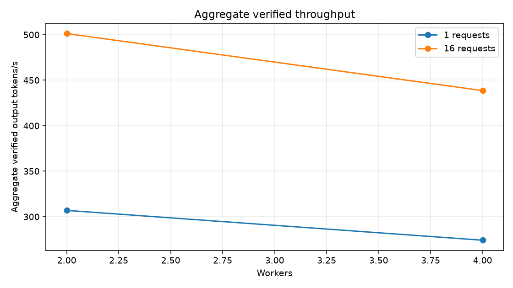
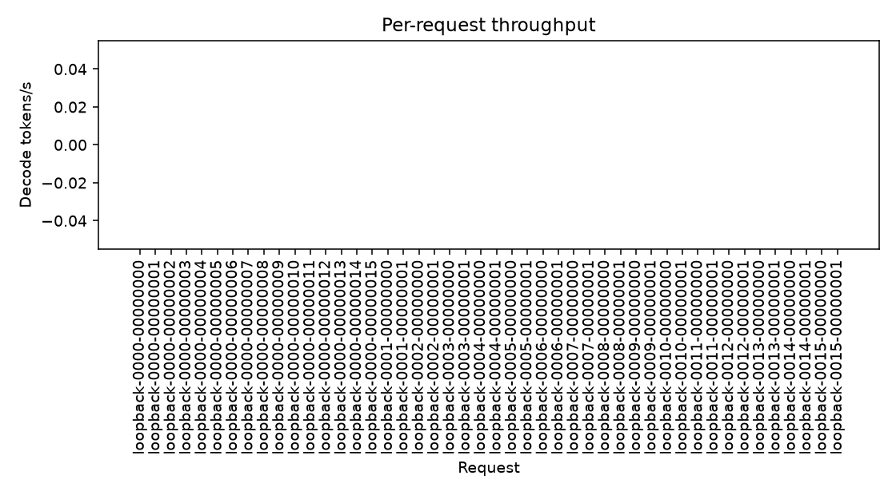
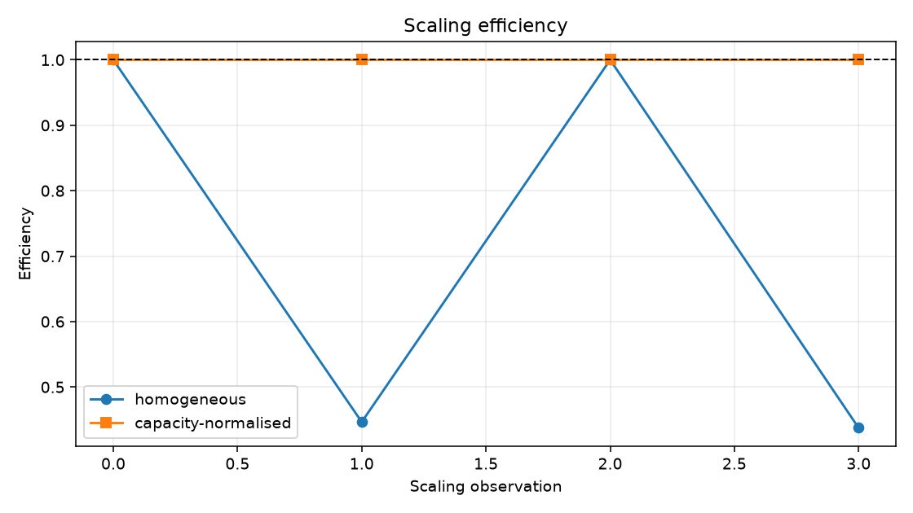
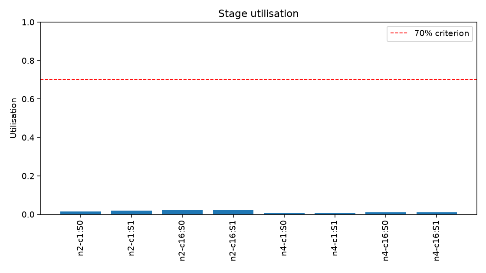
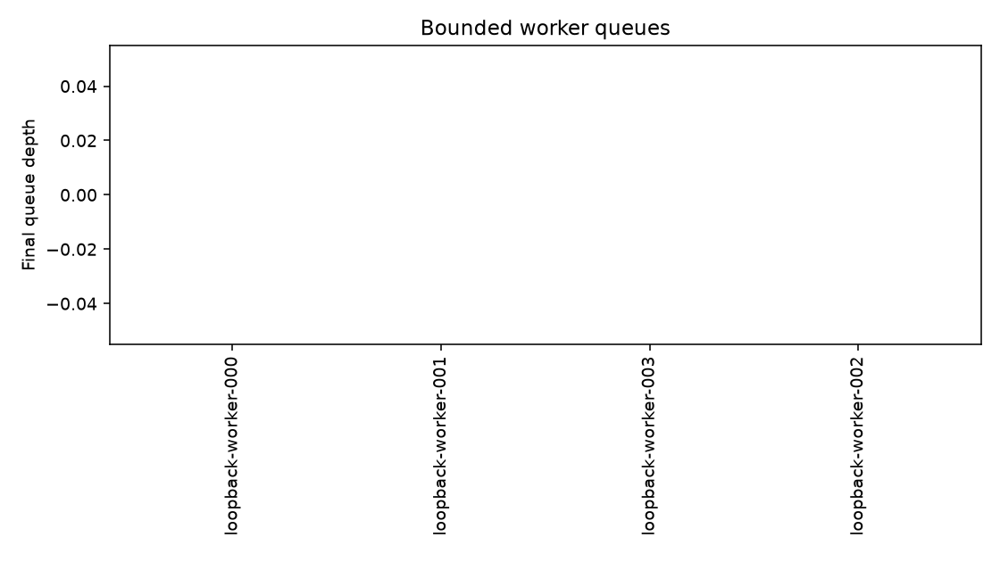
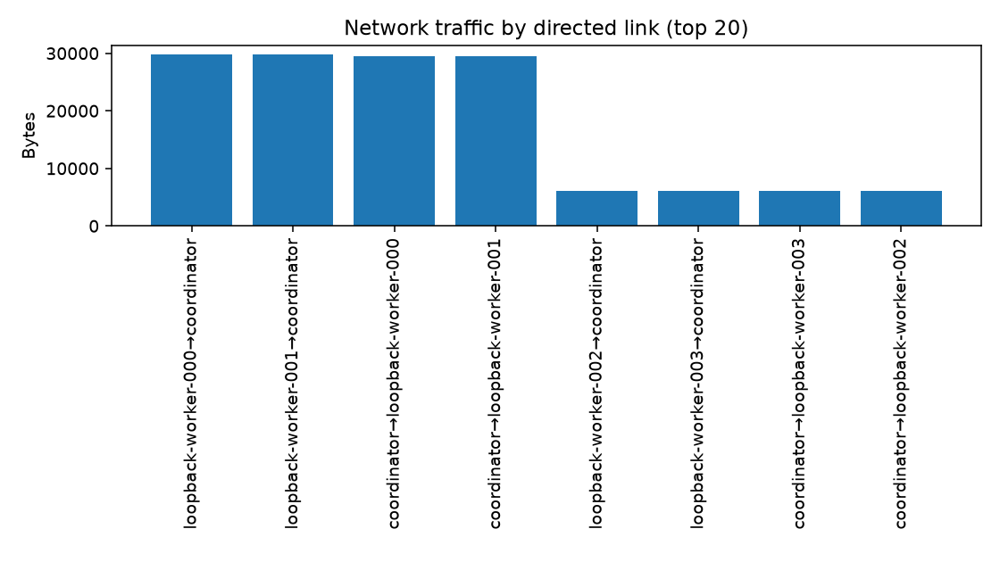

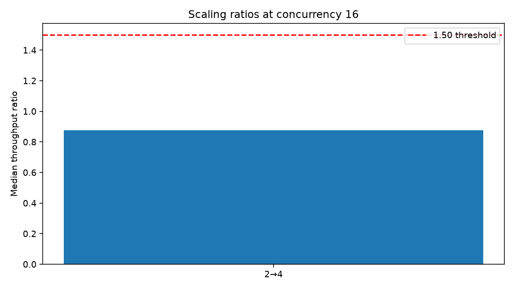
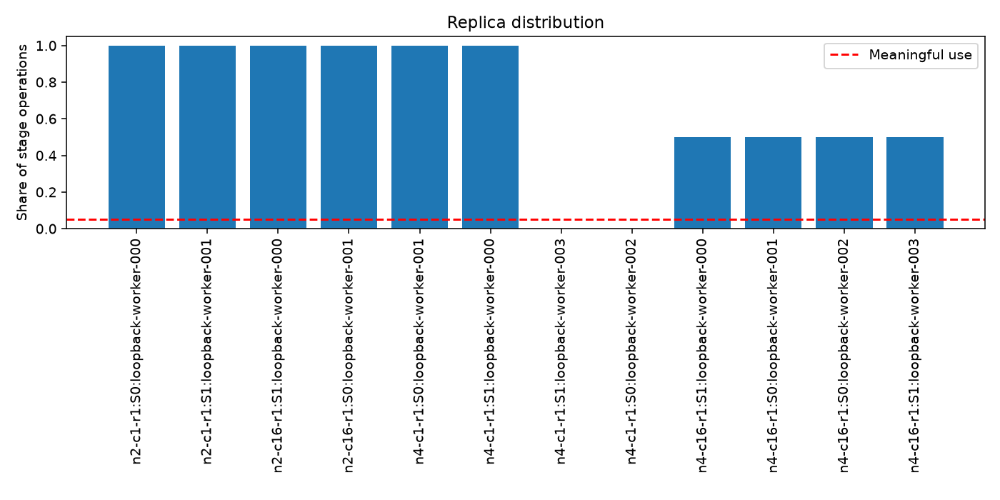
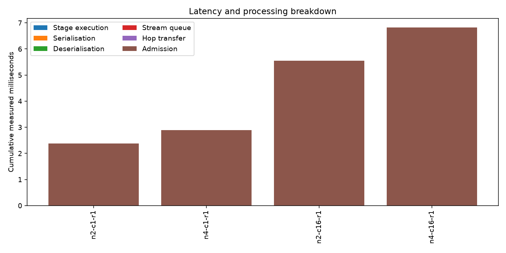
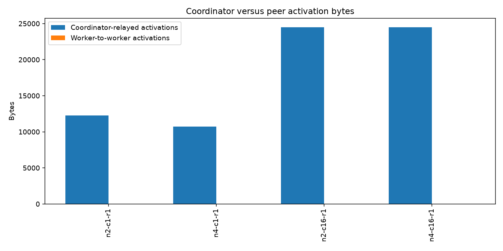
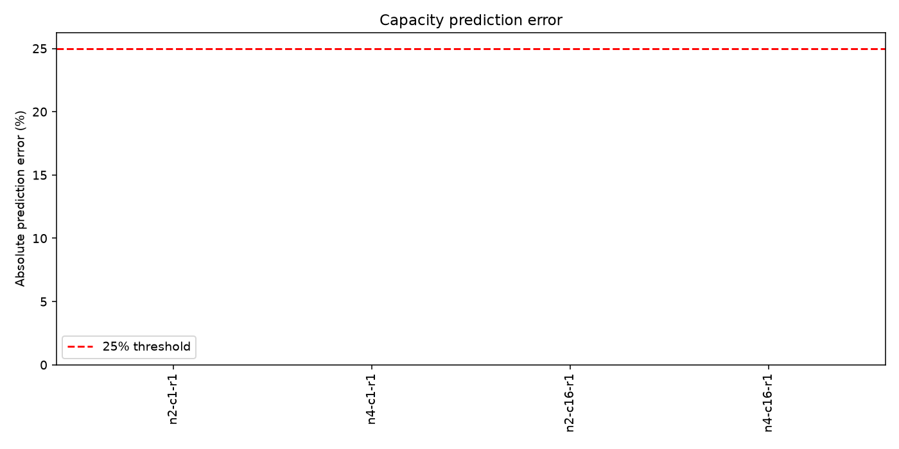
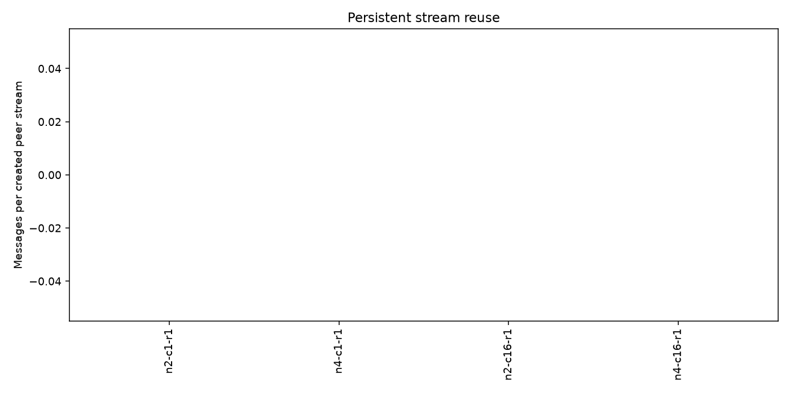
| Experiment integrity | PASS |
|---|---|
| Correctness | PASS |
| Direct data plane | PASS |
| Replica utilisation | PASS |
| Capacity prediction | PASS |
| Scaling hypothesis | FAIL |
| Overall | FAIL |
| Execution mode | single-host-loopback |
|---|---|
| PASS or FAIL | FAIL |
| Primary aggregate verified output tokens/s | 438.5953 |
| Baseline aggregate verified output tokens/s | 501.2445 |
| Node count | 4 |
| Concurrent request count | 16 |
| Model | synthetic-loopback-4gib-heavy |
| Values | Measured deterministic synthetic CPU execution across process-isolated workers on one host with loopback transport. This is single-host-loopback evidence, not physical distributed scaling. |
| Failed acceptance criteria | 3 |
| Criterion | Status | Observed | Required | Interpretation |
|---|---|---|---|---|
| integrity:complete_matrix | PASS | {"observed_points": 4, "expected_points": 4, "missing": [], "duplicates": 0} | "every configured worker/concurrency/repeat point exactly once" | Incomplete or duplicated points invalidate the matrix. |
| integrity:measurement_duration | PASS | 0.051071399939246476 | ">= 0.048s at every point" | Every primary measurement must cover the configured interval. |
| integrity:child_artifacts | PASS | [] | "no child artifact validation errors" | Every child result must retain its evidence bundle. |
| integrity:dependency_preservation | PASS | false | false | The experiment may not remove unrelated optional dependencies. |
| correctness:committed_tokens | PASS | 1.0 | 1.0 | Only correctly committed tokens support the hypothesis. |
| correctness:completion | PASS | 1.0 | 1.0 | Failure-free runs require every admitted request to complete. |
| direct:explicit_mode | PASS | ["coordinator-relay"] | "coordinator-relay" | The selected data plane must be explicit in every child. |
| direct:no_coordinator_activation_relay | PASS | 72004 | "explicit relay mode" | Direct mode may not relay intermediate activation payloads. |
| direct:persistent_stream_reuse | PASS | [] | "streams <= active peer pairs + reconnects at every point" | Stream creation must scale with peer pairs, not token operations. |
| utilisation:meaningful_replicas | PASS | 1.0 | 0.75 | Assigned replicas must perform at least 5% of their stage work. |
| utilisation:replica_balance | PASS | 1.0 | 1.5 | The busiest meaningful replica may not starve its peers. |
| capacity:median_prediction_error | PASS | 0.0 | 0.25 | Capacity estimates must reflect the measured critical path. |
| scaling:ratio_2_to_4 | FAIL | 0.8750126774438047 | 1.5 | Two replicas per stage must materially beat one. |
| scaling:ratio_4_to_8 | FAIL | 0.0 | 1.5 | Four replicas per stage must materially beat two. |
| scaling:ratio_2_to_8 | FAIL | 0.0 | 2.25 | The end-to-end gain must exceed the configured floor. |
| scaling:repeatability | PASS | {"2": 0.0, "4": 0.0} | 0.1 | A single unusually fast repeat may not determine PASS. |
| scaling:minimum_milestone | PASS | {"2": 501.24449635761897, "4": 438.5952888118516} | 20.0 | The legacy milestone remains necessary but is not sufficient. |
| node_count | concurrent_requests | throughput | throughput_gain | marginal_throughput | homogeneous_scaling_efficiency | capacity_normalised_efficiency |
|---|---|---|---|---|---|---|
| 2 | 1 | 306.9168 | 1.0000 | 0.0000 | 1.0000 | 1.0000 |
| 4 | 1 | 274.1260 | 0.8932 | -32.7907 | 0.4466 | 1.0000 |
| 2 | 16 | 501.2445 | 1.0000 | 0.0000 | 1.0000 | 1.0000 |
| 4 | 16 | 438.5953 | 0.8750 | -62.6492 | 0.4375 | 1.0000 |
The prior values are labelled measured historical artifact. artifacts\runs\20260730T032044Z-loopback-matrix-7cf6e3a7
| Workers | Verified tokens/s |
|---|---|
| 2 | 330.1861 |
| 4 | 330.5794 |
| 8 | 322.4298 |
Historical ratios: 2_to_4=1.0012, 4_to_8=0.9753, 2_to_8=0.9765.
| request_id | status | verification_state | decode_tokens_s | time_to_first_token_s | end_to_end_s | retry_count | route_changes |
|---|---|---|---|---|---|---|---|
| loopback-0000-00000000 | completed | verified | 0.0000 | 0.0041 | 0.0041 | 0 | 0 |
| loopback-0000-00000001 | completed | verified | 0.0000 | 0.0028 | 0.0028 | 0 | 0 |
| loopback-0000-00000002 | completed | verified | 0.0000 | 0.0026 | 0.0026 | 0 | 0 |
| loopback-0000-00000003 | completed | verified | 0.0000 | 0.0025 | 0.0025 | 0 | 0 |
| loopback-0000-00000004 | completed | verified | 0.0000 | 0.0024 | 0.0024 | 0 | 0 |
| loopback-0000-00000005 | completed | verified | 0.0000 | 0.0026 | 0.0026 | 0 | 0 |
| loopback-0000-00000006 | completed | verified | 0.0000 | 0.0024 | 0.0024 | 0 | 0 |
| loopback-0000-00000007 | completed | verified | 0.0000 | 0.0026 | 0.0026 | 0 | 0 |
| loopback-0000-00000008 | completed | verified | 0.0000 | 0.0024 | 0.0024 | 0 | 0 |
| loopback-0000-00000009 | completed | verified | 0.0000 | 0.0023 | 0.0023 | 0 | 0 |
| loopback-0000-00000010 | completed | verified | 0.0000 | 0.0024 | 0.0024 | 0 | 0 |
| loopback-0000-00000011 | completed | verified | 0.0000 | 0.0024 | 0.0025 | 0 | 0 |
| loopback-0000-00000012 | completed | verified | 0.0000 | 0.0025 | 0.0025 | 0 | 0 |
| loopback-0000-00000013 | completed | verified | 0.0000 | 0.0024 | 0.0024 | 0 | 0 |
| loopback-0000-00000014 | completed | verified | 0.0000 | 0.0023 | 0.0023 | 0 | 0 |
| loopback-0000-00000015 | completed | verified | 0.0000 | 0.0026 | 0.0026 | 0 | 0 |
| loopback-0000-00000000 | completed | verified | 0.0000 | 0.0132 | 0.0132 | 0 | 0 |
| loopback-0000-00000001 | completed | verified | 0.0000 | 0.0276 | 0.0276 | 0 | 0 |
| loopback-0001-00000000 | completed | verified | 0.0000 | 0.0137 | 0.0138 | 0 | 0 |
| loopback-0001-00000001 | completed | verified | 0.0000 | 0.0273 | 0.0273 | 0 | 0 |
| loopback-0002-00000000 | completed | verified | 0.0000 | 0.0151 | 0.0151 | 0 | 0 |
| loopback-0002-00000001 | completed | verified | 0.0000 | 0.0280 | 0.0280 | 0 | 0 |
| loopback-0003-00000000 | completed | verified | 0.0000 | 0.0159 | 0.0159 | 0 | 0 |
| loopback-0003-00000001 | completed | verified | 0.0000 | 0.0279 | 0.0279 | 0 | 0 |
| loopback-0004-00000000 | completed | verified | 0.0000 | 0.0178 | 0.0178 | 0 | 0 |
| loopback-0004-00000001 | completed | verified | 0.0000 | 0.0266 | 0.0266 | 0 | 0 |
| loopback-0005-00000000 | completed | verified | 0.0000 | 0.0223 | 0.0223 | 0 | 0 |
| loopback-0005-00000001 | completed | verified | 0.0000 | 0.0265 | 0.0265 | 0 | 0 |
| loopback-0006-00000000 | completed | verified | 0.0000 | 0.0252 | 0.0252 | 0 | 0 |
| loopback-0006-00000001 | completed | verified | 0.0000 | 0.0258 | 0.0258 | 0 | 0 |
| loopback-0007-00000000 | completed | verified | 0.0000 | 0.0258 | 0.0258 | 0 | 0 |
| loopback-0007-00000001 | completed | verified | 0.0000 | 0.0252 | 0.0252 | 0 | 0 |
| loopback-0008-00000000 | completed | verified | 0.0000 | 0.0268 | 0.0268 | 0 | 0 |
| loopback-0008-00000001 | completed | verified | 0.0000 | 0.0245 | 0.0245 | 0 | 0 |
| loopback-0009-00000000 | completed | verified | 0.0000 | 0.0276 | 0.0276 | 0 | 0 |
| loopback-0009-00000001 | completed | verified | 0.0000 | 0.0238 | 0.0239 | 0 | 0 |
| loopback-0010-00000000 | completed | verified | 0.0000 | 0.0312 | 0.0312 | 0 | 0 |
| loopback-0010-00000001 | completed | verified | 0.0000 | 0.0209 | 0.0209 | 0 | 0 |
| loopback-0011-00000000 | completed | verified | 0.0000 | 0.0319 | 0.0319 | 0 | 0 |
| loopback-0011-00000001 | completed | verified | 0.0000 | 0.0210 | 0.0210 | 0 | 0 |
| loopback-0012-00000000 | completed | verified | 0.0000 | 0.0335 | 0.0335 | 0 | 0 |
| loopback-0012-00000001 | completed | verified | 0.0000 | 0.0190 | 0.0190 | 0 | 0 |
| loopback-0013-00000000 | completed | verified | 0.0000 | 0.0351 | 0.0351 | 0 | 0 |
| loopback-0013-00000001 | completed | verified | 0.0000 | 0.0188 | 0.0188 | 0 | 0 |
| loopback-0014-00000000 | completed | verified | 0.0000 | 0.0353 | 0.0353 | 0 | 0 |
| loopback-0014-00000001 | completed | verified | 0.0000 | 0.0187 | 0.0187 | 0 | 0 |
| loopback-0015-00000000 | completed | verified | 0.0000 | 0.0356 | 0.0356 | 0 | 0 |
| loopback-0015-00000001 | completed | verified | 0.0000 | 0.0186 | 0.0186 | 0 | 0 |
| loopback-0000-00000000 | completed | verified | 0.0000 | 0.0044 | 0.0044 | 0 | 0 |
| loopback-0000-00000001 | completed | verified | 0.0000 | 0.0028 | 0.0028 | 0 | 0 |
| loopback-0000-00000002 | completed | verified | 0.0000 | 0.0027 | 0.0027 | 0 | 0 |
| loopback-0000-00000003 | completed | verified | 0.0000 | 0.0026 | 0.0026 | 0 | 0 |
| loopback-0000-00000004 | completed | verified | 0.0000 | 0.0025 | 0.0025 | 0 | 0 |
| loopback-0000-00000005 | completed | verified | 0.0000 | 0.0025 | 0.0025 | 0 | 0 |
| loopback-0000-00000006 | completed | verified | 0.0000 | 0.0026 | 0.0026 | 0 | 0 |
| loopback-0000-00000007 | completed | verified | 0.0000 | 0.0030 | 0.0030 | 0 | 0 |
| loopback-0000-00000008 | completed | verified | 0.0000 | 0.0025 | 0.0025 | 0 | 0 |
| loopback-0000-00000009 | completed | verified | 0.0000 | 0.0025 | 0.0025 | 0 | 0 |
| loopback-0000-00000010 | completed | verified | 0.0000 | 0.0027 | 0.0027 | 0 | 0 |
| loopback-0000-00000011 | completed | verified | 0.0000 | 0.0027 | 0.0027 | 0 | 0 |
| loopback-0000-00000012 | completed | verified | 0.0000 | 0.0027 | 0.0027 | 0 | 0 |
| loopback-0000-00000013 | completed | verified | 0.0000 | 0.0027 | 0.0027 | 0 | 0 |
| loopback-0000-00000000 | completed | verified | 0.0000 | 0.0247 | 0.0247 | 0 | 0 |
| loopback-0000-00000001 | completed | verified | 0.0000 | 0.0306 | 0.0306 | 0 | 0 |
| loopback-0001-00000000 | completed | verified | 0.0000 | 0.0203 | 0.0203 | 0 | 0 |
| loopback-0001-00000001 | completed | verified | 0.0000 | 0.0334 | 0.0334 | 0 | 0 |
| loopback-0002-00000000 | completed | verified | 0.0000 | 0.0240 | 0.0240 | 0 | 0 |
| loopback-0002-00000001 | completed | verified | 0.0000 | 0.0307 | 0.0307 | 0 | 0 |
| loopback-0003-00000000 | completed | verified | 0.0000 | 0.0205 | 0.0205 | 0 | 0 |
| loopback-0003-00000001 | completed | verified | 0.0000 | 0.0333 | 0.0333 | 0 | 0 |
| loopback-0004-00000000 | completed | verified | 0.0000 | 0.0255 | 0.0255 | 0 | 0 |
| loopback-0004-00000001 | completed | verified | 0.0000 | 0.0308 | 0.0308 | 0 | 0 |
| loopback-0005-00000000 | completed | verified | 0.0000 | 0.0202 | 0.0202 | 0 | 0 |
| loopback-0005-00000001 | completed | verified | 0.0000 | 0.0297 | 0.0298 | 0 | 0 |
| loopback-0006-00000000 | completed | verified | 0.0000 | 0.0262 | 0.0262 | 0 | 0 |
| loopback-0006-00000001 | completed | verified | 0.0000 | 0.0301 | 0.0301 | 0 | 0 |
| loopback-0007-00000000 | completed | verified | 0.0000 | 0.0205 | 0.0205 | 0 | 0 |
| loopback-0007-00000001 | completed | verified | 0.0000 | 0.0289 | 0.0289 | 0 | 0 |
| loopback-0008-00000000 | completed | verified | 0.0000 | 0.0294 | 0.0294 | 0 | 0 |
| loopback-0008-00000001 | completed | verified | 0.0000 | 0.0269 | 0.0269 | 0 | 0 |
| loopback-0009-00000000 | completed | verified | 0.0000 | 0.0296 | 0.0297 | 0 | 0 |
| loopback-0009-00000001 | completed | verified | 0.0000 | 0.0274 | 0.0274 | 0 | 0 |
| loopback-0010-00000000 | completed | verified | 0.0000 | 0.0314 | 0.0314 | 0 | 0 |
| loopback-0010-00000001 | completed | verified | 0.0000 | 0.0267 | 0.0267 | 0 | 0 |
| loopback-0011-00000000 | completed | verified | 0.0000 | 0.0306 | 0.0306 | 0 | 0 |
| loopback-0011-00000001 | completed | verified | 0.0000 | 0.0261 | 0.0261 | 0 | 0 |
| loopback-0012-00000000 | completed | verified | 0.0000 | 0.0318 | 0.0318 | 0 | 0 |
| loopback-0012-00000001 | completed | verified | 0.0000 | 0.0259 | 0.0259 | 0 | 0 |
| loopback-0013-00000000 | completed | verified | 0.0000 | 0.0337 | 0.0337 | 0 | 0 |
| loopback-0013-00000001 | completed | verified | 0.0000 | 0.0248 | 0.0248 | 0 | 0 |
| loopback-0014-00000000 | completed | verified | 0.0000 | 0.0322 | 0.0322 | 0 | 0 |
| loopback-0014-00000001 | completed | verified | 0.0000 | 0.0265 | 0.0265 | 0 | 0 |
| loopback-0015-00000000 | completed | verified | 0.0000 | 0.0365 | 0.0365 | 0 | 0 |
| loopback-0015-00000001 | completed | verified | 0.0000 | 0.0252 | 0.0252 | 0 | 0 |












See config.resolved.yaml, environment.json,
model_manifest.json, and the JSONL metric streams in this directory.
Artifact hashes are recorded in artifact_manifest.json.